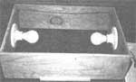

If you start your herbs and flowers and many of your vegetables indoors from seed as I do, you may want to try the inexpensive germination booster that I find handy. For one thing, it's easy to put together, and - for another - it really does the job I want it to do.
Not only does my little plant starter speed germination ... it also seems to help prevent "damping off" (the killer fungus to which seedlings are subject. If their planting medium isn't absolutely sterile). And it accomplishes all this by the mere introduction of some auxiliary heat to the tiny plants-to-be.
To make a "seed incubator" like mine, start by finding an insulated pad ... the kind that's metal on one side and asbestos on the other. Such pads are used to protect counters and tabletops from hot pots and are available at hardware or kitchen supply stores. The pad's dimensions will determine the capacity of your starting box (I've found 13" by 19" to be a good size).
Next get some four-ply plywood (about 5/8" thick) and cut two box sides, each measuring 5" by 18-1/2". Then saw out two 5" by 12-1/4" end pieces, and nail the four components together to form a topless, bottomless box
. Now-out of 1/4"-thick lath-cut two "tabs", each 81 by 1/2". Nail these to the center of the box's long sides (as pictured), so that half (or 1/4") of their width extends above the top edge of your indoor gardening aid. And now cut another pair of tabs (make each of these only four inches long) and nail them the same way to the box's ends. (These tabs will hold the insulated pad - which is going to rest on top of the box - in it's proper position.)
Next, mount two wired porcelain light fixtures to the inside ends of your warming device, with their shared cord clamped to the corners (as shown) and extending out through a small hole beside one of the fixtures. (The total length of the cord depends on the distance to the electrical outlet you'll be using.) Attach a plug to the end of the cord, and screw two 15- or 25-watt light bulbs (the lesser wattage will probably provide sufficient heat) into the fixtures.
Place the finished frame on a slab of asbestos or a heavy piece of board atop your propagating table (or in another handy spot), and set the insulated pad squarely over the top of the box, metal side up.
Finally, arrange your planting trays or other seed-starting containers on top of the pad, where they can be watered easily and where they'll be gently and evenly warmed. Do leave the lights on continually for as long as it takes the seedlings to sprout their second?or true-pair of leaves. From then on, adequate sunlight will provide all the warmth the young plants will need until It's time to set them out in your garden.
|
 NOTE: This photo of Tilde Merkert's seed starter shows the topless and bottomless box upside down ... so you can see exactly how the light fixtures and wiring are installed. In use, the box is flipped over so that the ""tab"" you see along the bottom edge of the rectangle's nearest side (and matching tabs nailed to the other three sides of the box as well) are on top of the topless and bottomless base. |
|
|